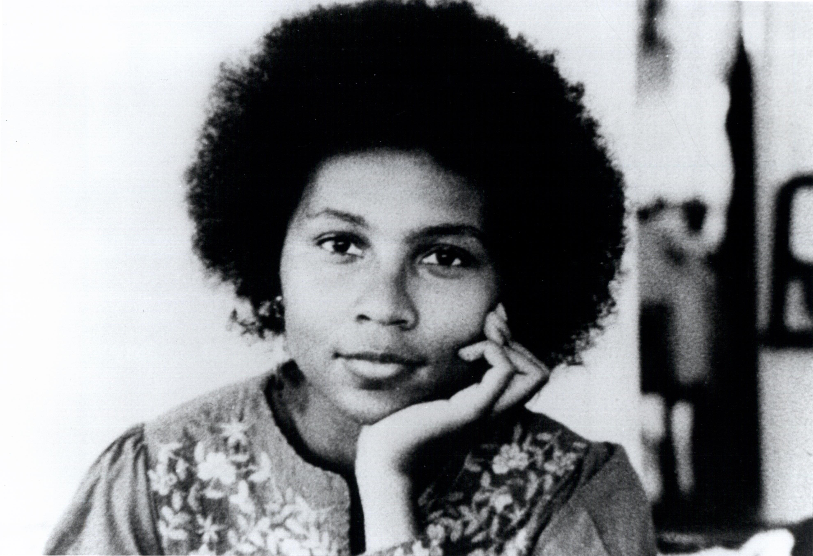
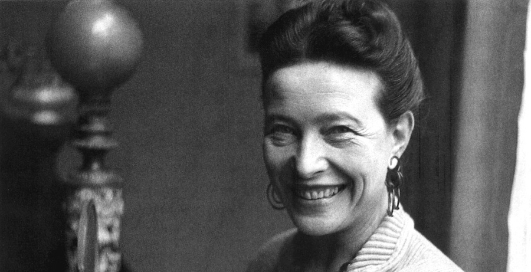
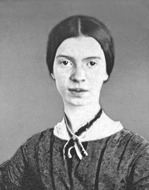

bell hooks
About
bell hooks is an American author, professor, feminist, and social activist.
hooks' writing has focused on the intersectionality of race, capitalism, and gender, and what she describes as their ability to produce and perpetuate systems of oppression and class domination. She has published over 30 books and numerous scholarly articles, appeared in documentary films, and participated in public lectures. She has addressed race, class, and gender in education, art, history, sexuality, mass media, and feminism.
Key Works
- Feminist Theory: From Margin to Center
- All About Love: New Visions
- Ain't I a Woman?: Black Women and Feminism
- Feminism is for Everybody
Simone de Beauvoir
About
Simone de Beauvoir was a French writer, intellectual, existentialist philosopher, political activist, feminist and social theorist. Though she did not consider herself a philosopher, she had a significant influence on both feminist existentialism and feminist theory.
De Beauvoir wrote novels, essays, biographies, autobiography and monographs on philosophy, politics and social issues. She was known for her 1949 treatise The Second Sex, a detailed analysis of women's oppression and a foundational tract of contemporary feminism; and for her novels, including She Came to Stay and The Mandarins.
Key Works
- The Second Sex
- Woman Destroyed
Betty Friedan

About
Betty Friedan was an American feminist writer and activist. A leading figure in the women's movement in the United States, her 1963 book The Feminine Mystique is often credited with sparking the second wave of American feminism in the 20th century. In 1966, Friedan co-founded and was elected the first president of the National Organization for Women (NOW), which aimed to bring women "into the mainstream of American society now [in] fully equal partnership with men."
Regarded as an influential author and intellectual in the United States, Friedan remained active in politics and advocacy until the late 1990s, authoring six books.
Key Works
- The Feminine Mystique
Maya Angelou

About
Maya Angelou was an American poet, singer, memoirist, and civil rights activist. She published seven autobiographies, three books of essays, several books of poetry, and is credited with a list of plays, movies, and television shows spanning over 50 years. She received dozens of awards and more than 50 honorary degrees. Angelou is best known for her series of seven autobiographies, which focus on her childhood and early adult experiences. The first, I Know Why the Caged Bird Sings (1969), tells of her life up to the age of 17 and brought her international recognition and acclaim.
With the publication of I Know Why the Caged Bird Sings, Angelou publicly discussed aspects of her personal life. She was respected as a spokesperson for black people and women, and her works have been considered a defense of black culture. She made a deliberate attempt to challenge the common structure of the autobiography by critiquing, changing and expanding the genre. Her books center on themes such as racism, identity, family and travel.
Key Works
- I Know Why the Caged Bird Sings
- And Still I Rise
- Phenomenal Woman
Alice Walker

About
Alice Walker is an American novelist, short story writer, poet, and activist. She wrote the novel The Color Purple (1982), for which she won the National Book Award for hardcover fiction, and the Pulitzer Prize for Fiction. An avowed feminist, Walker coined the term "womanist" to mean "A black feminist or feminist of color" in 1983.
Key Works
- The Color Purple
- In Search of Our Mothers' Gardens
Audre Lorde

About
Audre Lorde was an American writer, feminist, womanist, librarian, and civil rights activist. As a poet, she is best known for technical mastery and emotional expression, as well as her poems that express anger and outrage at civil and social injustices she observed throughout her life. Her poems and prose largely deal with issues related to civil rights, feminism, and the exploration of black female identity.
In relation to non-intersectional feminism in the United States, Lorde famously said, "those of us who stand outside the circle of this society's definition of acceptable women; those of us who have been forged in the crucibles of difference – those of us who are poor, who are lesbians, who are Black, who are older – know that survival is not an academic skill. It is learning how to take our differences and make them strengths. For the master's tools will never dismantle the master's house. They may allow us temporarily to beat him at his own game, but they will never enable us to bring about genuine change. And this fact is only threatening to those women who still define the master's house as their only source of support."
Key Works
- Sister Outsider
- A Burst of Light: Essays
- Your Silence Will Not Protect You
- The Master's Tools Will Never Dismantle the Master's House
Chimamanda Ngozi Adichie

About
Chimamanda Ngozi Adichie is a Nigerian novelist, writer of short stories and nonfiction.
In 2008, Adichie was awarded a MacArthur Genius Grant. She was described in The Times Literary Supplement as "the most prominent" of a "procession of critically acclaimed young anglophone authors [who] is succeeding in attracting a new generation of readers to African literature".
Key Works
- Americanah
- We Should All Be Feminists
- The Thing Around Your Neck
- Dear Ijeawele, or A Feminist Manifesto in Fifteen Suggestions
Roxane Gay

About
Roxane Gay is an American writer, professor, editor, and commentator.
Gay is a contributing opinion writer at The New York Times, founder of Tiny Hardcore Press, essays editor for The Rumpus, and co-editor of PANK, a nonprofit literary arts collective.
Key Works
- Bad Feminist
- Hunger
- Not That Bad: Dispatches from Rape Culture
- Difficult Women
Rebecca Solnit

About
Rebecca Solnit is an American writer. She has written on a variety of subjects, including the environment, politics, place, and art.
Solnit has worked on environmental and human rights campaigns since the 1980s, and is the author of seventeen books as well as essays in numerous museum catalogs and anthologies.
Key Works
- Men Explain Things to Me
- Hope in the Dark
- The Mother of all Questions
- The Faraway Nearby
Judith Butler

About
Judith Butler is an American philosopher and gender theorist whose work has influenced political philosophy, ethics and the fields of third-wave feminist, queer and literary theory.
Butler is best known for her books Gender Trouble: Feminism and the Subversion of Identity (1990) and Bodies That Matter: On the Discursive Limits of Sex (1993), in which she challenges conventional notions of gender and develops her theory of gender performativity. This theory has had a major influence on feminist and queer scholarship.
Butler has supported lesbian and gay rights movements and has spoken out on many contemporary political issues.
Key Works
- Gender Trouble: Feminism and the Subversion of Identity
- Undoing Gender
- Bodies that Matter: On the Discursive Limits of Sex
- Precarious Life
Virginia Woolf
About
Virginia Woolf was an English writer, considered one of the most important modernist 20th-century authors and a pioneer in the use of stream of consciousness as a narrative device.
Throughout her life, Woolf was troubled by bouts of mental illness, which included being institutionalised and attempting suicide. Her illness is considered to have been bipolar disorder, for which there was no effective intervention at the time. Eventually in 1941 she committed suicide by putting rocks in her pockets and drowning herself in a river, at the age of 59.
Woolf became one of the central subjects of the 1970s movement of feminist criticism, and her works have since garnered much attention and widespread commentary for "inspiring feminism", an aspect of her writing that was unheralded earlier. Some of her writing has been considered offensive and has been criticised for a number of complex and controversial views, including anti-semitism and elitism.
Key Works
- A Room of One's Own
- The Waves
- Mrs Dalloway
- To the Lighthouse
Jane Austen

About
Jane Austen was an English novelist known primarily for her six major novels, which interpret, critique and comment upon the British landed gentry at the end of the 18th century. Austen's plots often explore the dependence of women on marriage in the pursuit of favourable social standing and economic security. Her use of biting irony, along with her realism, humour, and social commentary, have long earned her acclaim among critics, scholars, and popular audiences alike.
Key Works
- Pride and Prejudice
- Emma
- Persuasion
- Sense and Sensibility
Charlotte, Emily, and Anne Brontë

About
The Brontës were a nineteenth-century literary family from England. The sisters, Charlotte, Emily, and Anne, are well known as poets and novelists. Like many contemporary female writers, they originally published their poems and novels under male pseudonyms: Currer, Ellis, and Acton Bell. Their stories immediately attracted attention for their passion and originality. Charlotte's Jane Eyre was the first to know success, while Emily's Wuthering Heights, Anne's The Tenant of Wildfell Hall and other works were later to be accepted as masterpieces of literature.
Key Works
- Jane Eyre (Charlotte)
- Wuthering Heights (Emily)
- The Tenant of Wildfell Hall (Anne)
Emily Dickinson
About
Emily Dickinson was an American poet.
Dickinson lived much of her life in reclusive isolation. Considered an eccentric by locals, she developed a noted penchant for white clothing and became known for her reluctance to greet guests or, later in life, to even leave her bedroom. Dickinson never married, and most friendships between her and others depended entirely upon correspondence. She was a recluse for the later years of her life.
While Dickinson was a prolific private poet, fewer than a dozen of her nearly 1,800 poems were published during her lifetime. Many of her poems deal with themes of death and immortality, two recurring topics in letters to her friends.
Key Works
- Because I could not stop for Death
- Success is Counted Sweetest
Phillis Wheatley

About
Phillis Wheatley was the first published African-American female poet. Born in West Africa, she was sold into slavery at the age of seven or eight and transported to North America. She was purchased by the Wheatley family of Boston, who taught her to read and write and encouraged her poetry when they saw her talent.
Wheatley was emancipated shortly after the publication of her book. She married in 1778, but after the inprisonment and death of her hsuband, fell into poverty and died of illness.
Key Works
- On Being Brought from Africa to America
Agatha Christie

About
Agatha Christie was an English writer. She is known for her 66 detective novels and 14 short story collections. Christie also wrote the world's longest-running play, a murder mystery, The Mousetrap, and, under the pen name Mary Westmacott, six romances.
Guinness World Records lists Christie as the best-selling novelist of all time. Her novels have sold roughly 2 billion copies, and her estate claims that her works come third in the rankings of the world's most-widely published books, behind only Shakespeare's works and the Bible.
Key Works
- And Then There Were None
- Murder on the Orient Express
- The A.B.C. Murders
- The Murder of Roger Ackroyd
Sandra Cisneros
About
Sandra Cisneros is an American writer. She is best known for her first novel, The House on Mango Street (1983),and her subsequent short story collection, Woman Hollering Creek and Other Stories (1991). Her work experiments with literary forms that investigate emerging subject positions, which Cisneros herself attributes to growing up in a context of cultural hybridity and economic inequality that endowed her with unique stories to tell. She is the recipient of numerous awards, including a National Endowment for the Arts Fellowship, was awarded one of 25 new Ford Foundation Art of Change fellowships in 2017, and is regarded as a key figure in Chicano literature.
Key Works
- The House on Mango Street / La casa en Mango Street
- Woman Hollering Creek and Other Stories / El arroyo de la Llorona y otros cuentos
- Have You Seen Marie? / ¿Has visto a María?
- Caramelo / Caramelo